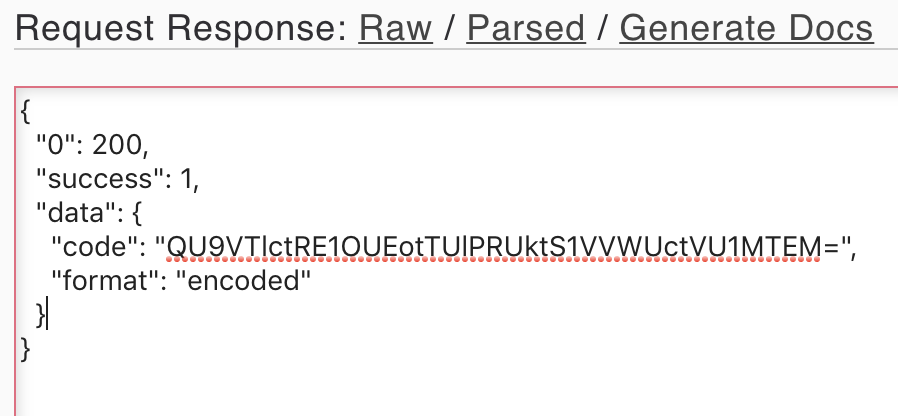

Basics of Malware
The word malware is a concatenation of the individual words 'malicious' and 'software'. This term encompasses a wide variety of software, all of which has malicious end goals. In contrast to software a user would knowingly install on their device, malware is placed on a device through deceptive, and sometimes illegal methods. So, what is the driving factor behind this type of behavior?
There are quite a few motivating factors behind malware. The most common is for financial gain. Data breaches containing user info as well as credit card numbers and credentials is, unfortunately, a regular occurrence. Aside from attacks at the corporate level, malware can be targeted at individual credit card readers such as at a gas station pump or ATM machine. This reinforces the need to be educated about how malware works and how to detect it. Other motivating factors include political purposes, other forms of organized crime, and even research or experimentation just to see how a system can be exploited.
Multiple categories of malware exist including:
- Viruses
- Trojans
- Potentially Unwanted Software (PUP)
A Trojan is a form of malicious software named after the Trojan horse of Greek mythology. Look up the story to learn more - but essentially the Trojan disguises itself as something else in order to gain access to the user's system. The Trojan may look like a useful application, a game, any other number of things a user would be open to downloading. In an ironic manner, Trojans may even be disguised as anti-virus software! Once the user's system is breached, a Trojan can log the system's keystrokes, hold the device ransom for money, or use the system as a bot.
A Potentially Unwanted Program (PUP)is something that the user likely gave consent to download even though its something they don't actually want. In some cases they downloaded another program and in the process, gave consent for that program to add the PUP to their device. Two common PUPs come in the form of adware and spyware.Adware monitors the user's activity in order to target advertisements specifically tailored to their interests. Spyware similarly monitors activity, but it uses this information for purposes broader than advertising.
Understanding these forms of malware and how they work is the first key to defending against them. The next step is to actually examine live malware samples in a lab environment to gain hands on experience with their behaviors and tendencies. Several tips are provided for doing just that. First, malware samples should be transported in an inactive state. If the sample uses a specific file extension, then rename it until it is ready to use. Second, the testing environment should be completely locked down. This could include the use of anti-malware programs, firewalls, and specific policies to protect the environment. Lastly, be ready to completely disconnect from internet at a moment's notice.
Advanced Forensics
This week we dove into some more advanced forensics with a particular emphasis on evidence acquisition. A quote from an early lecture set the ground work for week: "Forensic computing is the process of identifying, preserving, analyzing, and presenting digital evidence in a manner that is legally acceptable." In laymen's terms, the job of a forensic investigator is not to prove whether or not someone is guilty or innocent. The job is prove what exactly happened on the system in question as accurately as possible. A declaration of innocence or guilt is a job left for the judge and jury.
The various aspects of the job of a forensics investigator can be summed up in three words:
- Acquisition
- Investigation
- Reporting
Another consideration regarding evidence acquisition is the fact that evidence can exist on a wide variety of layers within a system. A number of those discussed in class include:
- Network
- Operating System
- Database
- Peripherals
- Removable Media
Once acquired, the evidence must then be carefully disected and investigated. The investigator must be equipped with a variety of tools and know how to use each of them to understand the data being examined. Hands-on examples were given in class allowing us to utilize tools such as FTK Imager to examine data. Another key aspect of investigation is to form a very accurate timeline of events. This can be done by diggint into time stamps or system logs and is very helpful is reconstructing a malwre attack. It can also be useful for triage. That is, proving the same conclusion in multiple different ways. By developing an accurate timeline, it is much easier to prove certain events and disprove others.
Lastly, the evidence must be reported. While some investigators have transitioned to electronic means for reporting, this is largely still done with paper and pen. Again, noting the time of specific events is key for reporting. This ensures that no doubt remains as to what happened and when. It is also important to communicate clearly in the report. Many times very technical terms and events will need to be explained to people, possibly a judge or jury, with little to no technical background. Everything must be explained in a way that they can understand.
There's one more concept that should be noted this week and that is the order of volatility. This refers to the specific order in which data and evidence should be collected. By volatile I mean the least stable - the evidence that is most likely to become corrupted, be lost on the network, or even erased from a hard drive never to be seen again. Taken from Darril Gibson's Security+ book, the order of volatitiy is as follows:
- Data in cache memory
- Data in RAM
- A paging file
- Data stored on local disk drives
- Logs stored on remote systems
- Archive media
Malware Defense
The previous week's lectures supplied us with a great deal of information about malware. Topics ranged from an overview of malware and what it does, to a deeper understanding of malware including how it should be handled and analyzed. This week we shifted gears a bit. Understanding malware is great, but now that we know what it does and how it acts, what can we do to defend against it?
The question seems simple at first but its apparent that there is no one-size-fits-all solution to this problem. We've already learned that there are millions upon millions of malicious attacks floating about the web. It's not possible to stop or even defend against everything. However, one step we can take to assist in this is to place malware under four broad umbrellas that characterize their execution. In order, these steps are:
- First Contact
- Local Execution
- Establish Presence
- Harvest Information
Step one is pretty straightforward. First contact is the means by which the user is initially exposed to malicious software. This takes a variety of forms but most commonly includes email or instant messages, misuse of physical media, or even poisoned search results. Looking more closely at the email example - most companies have policies in place to protect their users from malicious emails. This often includes training on how to identify and handle suspicious emails. But there's always a case where a curious user opens an untrusted email or even downloads an attachment from a suspicous email.
By doing so, the user has fallen prey to the malware's first contact. The malware was opened and is now moved to the second stage - local execution. Sometimes this may happen automatically. But sometimes it may require the user to perform an extra step. Maybe the malware tricks the user into running an executable. Regardless of the method, this stage is when the malware executes the malicous portion of its code.
With the malware now executed, it will next seek to establish presense on the host machine. This is where the malware gets to work really entrenching itself and spreading its roots. This may take several forms, the first of which is downloading and installing additional malware. This can cause a chain reaction resulting in tens or even hundreds of separate pieces of malicious software installed on the host. A second technique involves propgation to another system. Picture a secenario in which one machine in a large company is infected. Then, through file copying or network exploitation, that malware infects all the other machines in the company! One more way for malware to establish presence is through self-preservation. In this scenario the malware takes specific steps to protet itself. One common way this is done is through the disabling of security software or updates that would detect and disable the malware.
At this point the malware has made contact with the host, executed locally, and established its presence. Now it's time to go into the malicious activity. It's not uncommon to hear about large data breaches and this is one specific area that malware targets: capturing sensitive data. A keylogger or man-in-the-browser attach may be used to capture information. This data can in turn be used for identity theft or financial fraud. It can also take the form of adware. If you've ever downloaded something from the web only to find a dozen toolbars added to your browser, you may have been exposed to this type of attack. In some cases these toolbars or ads can be clicked which triggers another malicioius event.
Turning to malware defense we covered several popular technologies in use today. But the best way to categorize the entire approach describe would be defense in depth. This is a common security practice in which multiple layers of protection are implemented to provide a stronger defense structure. This method is explored in more detail in Darril Gibson's Security+ textbook and includes two parts: control diversity and vendor diversity. Control diversity relies on implementing a wide variety of security control types. These may come in the form of administrative, technical, and physical controls. Practical examples include locked or secured rooms, firewalls & intrusion detections tools, and penetration testing. Vendor diversity is another method for adding layered defenses to the overall security plan. An exploit that may exist in one vendor's firewall may be protected by another vendor's firewall. The result is a combined firewall solution that is more difficult to penetrate. Altogether, vendor and control diversity allow for a strong layered defense that is much more secure than any single solution on its own.
Vulnerabilities & Exploits
This week our attention turned to vulnerabilities and exploits. It's important to understand what these words mean and how they relate. As defined by Darril Gibson a vulnerability is a weakness or flaw in a system. It is at these particular weak points that appeal to hackers trying to break. They specifically target these areas and attempt to exploit them. By exploiting a vulnerability it actually becomes a breach of the system and can then be use for malicious purposes. This highlights the fact that hacking often means thinking outside of the box. It means getting inside the mind of the developer, and finding out what they missed on the security side of things. This could mean finding a bug on a webpage that can be used to alter the behavior of the page. Or it could be taking advantage of a system that is not configured properly or was created using poor programming practices. There are many scenarios that fit the bill but these are just two examples.
Another important bit of information to note is that attackers are shifting their focus. In past years it was the case that they targeted perimeter defenses such as routers or firewalls. Companies protected themselves by employing defense in depth. This is a topic that I discussed at length in my previous post. The attackers needed to adapt to this strategy. In doing so, their focus shifted to the user. Specifically, they looked to exploit the user - the most common target being the user's browser. To help combat these exploits, companies began offering bug bounties. One example is the Samsung Bug Bounty program. They will reward someone anywhere from $200 to $200,000 for find a legitimate bug. The reward depends on the severity level.
The first type of attack discussed in class was the buffer overflow. An overflow occurs when a system application receives more data than it is capable of properly handling. The excess data spills out essentially, and the result is that the system's memory is exposed. In this attack, the buffer refers to the memory that the application normally has access to. The overflow references the memory that is outside of this application's own scope, which is now completely exposed. At this point, the exposed memory is only classified as a vulnerability. It is not until the attacker does something malicious with it that it becomes an exploit.
The buffer overflow attack can be broken down into several steps. In the example in class this begins with crash triage. The main things to find out here are what do we control and where are we in the execution of the code. Essentially this is figuring out the vulnerability - how was the crash caused and how can it be repeated and exploited. Next, we need to find out the return address offset. This lets us know how many bytes we have to work with. We can then position our shell code. Shell code is what we call the specific set of instructions that we craft and inject into the application - it is the executable portion of this attack. Now just because the shell code is placed in memory doesn't mean it will automatically trigger. This brings up the last step which is finding the address of the shell code. Several techniques are described in detail to get us to the shell code. Once there, the code executes and the calculator pops up! Of course, in the real world something much more nefarious would likely happen!
The second attack described is called use after free. I won't go into as much detail because it's similar in concept to the previous attack. The main difference is that this attack targets the heap, while the previous attack targets the stack. In use after free, first an object must be freed from memory. This freed object is now replaced with an object of our own. Special care must be taken here to ensure the object is the same size as that which was freed. The shell code is then positioned and the ojbect is used again, triggering the shell code.
Windows Memory Manipulation
This week our attention turns to memory manipulation in Windows machines. It is sometimes the case that attackers will use hidden files to exploit a machine. So this week's goals are twofold:
- Understand the concepts of stealth by means of memory manipulation.
- Debug and explore various stealth techniques
Understanding kernel memory manipulation also requires an understanding of threads and how they work. Simply put, a thread is the smallest unit of execution within an operating system. Different applications may have multiple jobs that need to be processed. These can be broken down into individual processes, each with its own thread. The thread scheduler then loads these jobs into the CPU, prioritizes them, and executes the process. These processes can be examined using the Process Hacker tool as discussed in lecture. This allows the user to view all the current processes, the drivers or applications they are associated, and their individual permissions (read, write, and execute). These processes can be analyzed to see if malware is generating any new malicious processes. A clear indiciation that this is the case is when a private, unnamed processes is generated that has execute permissions.
We then discussed rootkits at a deeper level. This ties in with the previous discussion about hidden files and malware. A rootkit is malware that infects a system, but is able to hide the fact that the system is infected. This may be accomplished through hidden processes or modifying various system files. Also, rootkits have system-level access to the machine. This puts the rootkit at the same level as the root, or kernel of the machine, hence the name. The rootkit utilizes hooks, which were previously described, to catch calls to the operating system and use them maliciously.
Lastly, we discussed the bootkit. The bootkit differs from a rootkit in that it specifically targets the Master Boot Record. This type of attack allows the malicious portion of the kit to execute before the operating system is even loaded. Just as the rootkit, the bootkit may be difficult to detect as they are typically hidden from the operating system and antivirus software. Bootkits enable the attacker to circumvent some of the security features designed to stop the hooking processes of rootkits. Again, these are very hard to detect and can be quite destructive.
Network Security
Network security is a massive topic that cannont be reasonably breached in a single week of classes. So, the intructors gameplan is to provide an overview of some of the main technologies used in this sector and how they interact. This ties back into previous discussions about defense in depth. But first, what is the main goal of network security? While everything we've learned so far is great, network security helps prevent threats from ever reaching a device in the first place. It also protects valuable network resources from being redirected or used for malicious purposes.
We then turned our attention to specific network-based protection strategies. This list includes:
- Positive Policy
- Firewalls/Security Zones
- Defense in Depth
- Intrusion Detection
- Honeynets/Intrusion Deception
- Quarantine
- Reptation
Next, we turned to learning about specific attacks. First is a man in the middle attack. This is when packets are moving along a network, and someone is along that path intercepting or even changing the information in those packets. A man in the middle can be used for both good and evil. In one scenario an attacker can use ARP poisoning to have all network traffic redirected to their system. In a good scenario, the man in the middle can rewrite TCP packet headers to prevent attacks coming in this way. To prevent this we can use a cryptographic hash to join the packets in a sequential chain. This ensures the packets arrive in order. We can also hash important parts of the packet that can only be decoded with a shared secret that only the sender and receiver has access to.
The next threat discussed in class is reconnaissance. This attack comes is two forms. Active recon is where the attacker actively explores a network to find vulnerabilities. Passive recon involves just monitoring a network to understand its activity. This could be done with a tool like Wireshark. Wireshark gives access to IP address, FTP protocol, MAC addresses, packet size, and a variety of other useful information.
DOS attacks are very common. This type of attack is simply about consuming the system's resources, in a way that the system is completely locked up and can't do anything else. Basicaly any limited resource within a system can be attacked and exhausted. One method to defend against this, is to pass all traffic through a scrubbing center that is cabapable of handling massive amounts of traffic. The scrubbing center then filters the traffic and only lets legitimate traffic through.
A few other attack types were covered in general, but its hard to cover everything in detail. A broad overview of defense strategies was presented as well. The biggest takeaway, similar to a previous week, is that network defense is a multi-layered approach. There are so many types of attacks out there and a system must be able to defend against them all. No single tool can accomplish this. Therefore, defense in depth must be smartly implemented to secure a system.
Web Security
The web is essentially everywhere. Not only do we use the web on our phones and laptops, but all household devicies, ever refrigerators, and now connected to the web. This leaves a lot of exposure to web-based attacks in terms of vulnerable devices. With this in mind, we took a look at a general overview of web-based attacks throughout the history of the web. As the web itself advanced in technology, web attacks also adapted and developed alongside it. One important note here is that in previous decades users used the browser for very specific things, then exited the browser. So attackers simply used the browser as a way to get to other parts of the device. These days, we do almost everything in the browser and have no reason to leave it. We leave our browser's open, so an attacker can access the browser and have access to whatever they want.
User-level attacks are those that basically have nothing to do with technology. We can commonly refer to this as social engineering. The user is willing to do things that you wouldn't imagine, including clicking literally everything. First, we looked at phishing. It was previously very ugly, but these today a phishing website looks as good or better than actual clean websites. These sites are used to get the information of the user. We also discussed SEO poisoning. This is when a malicious site is able to get its link high up on search enginer results, knowing that the user will click it since its a top link. Another type of attack is fake updates or fake antivirus. This preys on people who are trying to do the right thing. In trying to update or protect their computer, they click on a link that actually infects their system. There's also homographic attacks to be aware of. A great example of this is the fact that rnicrosoft.com looks so similar to microsoft.com. So user's will click the first link thinking it's the legitimate Microsoft site. Another common attack comes in the form of social media attacks. This can be done by sending links that are tied to social media like Facebook. People will trust this link since they see Facebook in the title and click it. It can also come through the impersonation of users. Attackers will create fake accounts with real pictures and information in order to trick users. Another attack is malvertising. Ads today can be highly specific. By paying money, an attacker can target the exact group he desires for the ad. The attacker then uses this to redirect the target group to the malicious site. Waterhole attacks work in situations where it is difficult to reach every target person. Instead, just attack a site where all those people are already gathered. One example is a forum that developers frequently use. Attacking this site means attacking all the developers who already regularly visit it.
Continuing the study on web attacks, we discussed one known as clickjacking. This is when attacker tricks a user into clicking something other than what they think they are actually clicking. One common example is tied to social media. Let's say a user is clicking around on a Facebook page and is presented with some sort of prompt. This could be disguised as a commonly recognized prompt, such as a CAPTCHA. However, when the user clicks they are actually sharing a post or comment with their social group. This is because the link was malicious, and simply designed to look something else. A SQL injection attack occurs when a form or field on a webpage is exploited to access the underlying database. This is typical on login pages. The attacker can dig into the SQL database to find a legitimate username and password and access the site. Stop this attack by implementing extensive input validation for forms. Cross-site scripting works by injecting malicious code into a website. This is typically done in the form of browser side scripts being sent to users. The browser accepts the script because the page they are on is trusted, it has just been breached with the malicious script. One of the ways that this can be prevented is through input validation and having security checks run on the server side of things.
We were also provided a host of tools used for web security analysis. These include the following:
- Burp Suite
- PhantomJS
- Web Scarab
- JS Unpack
- Firebug
Messaging Security
This week we turn our attention specifically toward the topic of messaging security. This is an incredibly important topic as there are billions upon billions of emails sent every single day. Such a widespread and universal form of communication is rife with malicous attackers looking to exploit unsuspecting users. While a variety of topics were covered in these lectures, I want to hone in on the messaging security fundamentals introduced to us early on. These include:
- Spam/Ham
- Spamtrap/Honeypot
- Botnet
- Snowshoe Spam
- Phishing vs Spear Phishing
- RBL
- Heuristics
- Bayesian (Statistical)
- Fingerprinting/Hashing
Starting at the top spam is simply unwanted, or unsolicited email. This does not mean all spam is malicious. Let's say a company purchases an email list and sends out 10,000 advertisements a day via email to every person on the list. The ads are legitimate, but most likely unwanted. The phrase Ham is what we use to designate an email as legitimate. This is an email that does not contain any malicious content.
To help manage spam, a user can implement a spam trap. This is essentially a honeypot, which we've already discussed, set up specifically to capture spam. The trap looks like a real email address, but it doesn't function as one. It's simply setup in disguise to capture spam. The spam can then be analyzed and used for further advancing the security features of the network the spam was sent to.
While we've discussed botnets already, this week we specifically looked at how these are utilized for sending spam or malicious emails. An attacker may send a single malicious email to a user. When the user opens the email, it adds them to the botnet, and sends that same email to every single person in their contact list. This is repeated over and over until the attack controls a botnet of hundreds or even thousands of users.
A snowshoe is used to distribute weight so that the snow is not breached as you walk across. Likewise, snowshoe spam is unsolicited email that's spread over a wide area. Specifically, the spam may be distributed across a massive range of IP addresses making the attack difficult to counter.
Phishing is an attack whereby a user is sent an email intended to trick them into revealing information or clinking something. This attack can be used to get money from the user, install malware, validate an email address, or a number of other nefarious things. Spear phishing is similar, but instead of sending out the attack in a wide net of potentional people, the attack is very targeted. Sometimes attackers will target high level users in a company like the president or CEO. Or they will target human resources while impersonating the president or CEO.
Next we looked at the RBL or real-time blackhole. This is just a blacklist of locations on the web that are known or reputed to send spam. If the device recognizes the email location as a blacklist site, it's sent to the blackhole. This has trickled down to use in the personal home in the form of the pi-hole. This is a raspberry pi computer that is setup and configured to function as a blackhole.
Heuristics is a filtering method that relies on algorithms to examine text. This carries over into the next topic of Bayesian filtering. This filter is used to recognize specific words or word patterns associated with spam. This works with the current rise of machine learning. A machine can be taught to recognize these associates and become quite adept at filtering out spam email.
Lastly, fingerprinting is a way to easily identify legitimate messages. Just as humans have unique fingerprints, unique fingerprints can be hashed and apply to email messages. A user, knowing what to expect, can see the unique fingerprint and know that the email is safe.
Invite Code
The landing page to begin this Hack the Box final project is a screen providing a prompt for an invite code. A smiley face belies the challenge ahead with invitation to “hack your way in”. There’s not much to go on here, but I mouse around the screen searching for any hidden clickables, but no success. So I take my search to the next layer by Inspecting the page. My goal here is to find any word or file related to the invite code. Scanning through the top-level HTML I come across a script include that looks promising:
< script defer="" src="/js/inviteapi.min.js">< /script>
I’ve created a few websites so I know I can access the contents of this JavaScript file with the following - https://www.hackthebox.eu/js/inviteapi.min.js which brings me a page with this code:
eval(function(p,a,c,k,e,d){e=function(c){return c.toString(36)};if(!''.replace(/^/,String)){while(c--){d[c.toString(a)]=k[c]||c.toString(a)}k=[function(e){return d[e]}];e=function(){return'\\w+'};c=1};while(c--){if(k[c]){p=p.replace(new RegExp('\\b'+e(c)+'\\b','g'),k[c])}}return p}('1 i(4){h 8={"4":4};$.9({a:"7",5:"6",g:8,b:\'/d/e/n\',c:1(0){3.2(0)},f:1(0){3.2(0)}})}1 j(){$.9({a:"7",5:"6",b:\'/d/e/k/l/m\',c:1(0){3.2(0)},f:1(0){3.2(0)}})}',24,24,'response|function|log|console|code|dataType|json|POST|formData|ajax|type|url|success|api|invite|error|data|var|verifyInviteCode|makeInviteCode|how|to|generate|verify'.split('|'),0,{}))
Once again I read through the code searching for anything that may pertain to the invitation code or something similar. Toward the bottom there looks to be a variety of functions that can be run, one of which stands out because it is called makeInviteCode. There’s also a verifyInviteCode but I want to try the other function first. I can’t verify what I don’t yet have. Still within the Inspect page I open the console and run makeInviteCode. Of course, I get an error because I forgot the parentheses. I try again - makeInviteCode(); and get a success message. I clicked around an opened up the data from the request and found a message:
While I’ve never heard of this before, it looks like this message is encrypted with ROT13. So I Google “ROT13 decrypt”, open the first link and paste the message in. The decrypted message reads, “In order to generate the invite code, make a POST request to /api/invite/generate."I wasn’t exactly sure about the quickest or easiest way to fire off a POST request. But I found an online at codepunker.com that worked just fine. I sent a request a received back a response:
The format is encoded but it’s not as specific as last time. So I do a search for POST request encryption and find out that it’s encrypted using base64. So, again, I quickly find a base64 decoder online, run the encrypted text through it, and get my key: AOUNW-DMNPJ-MIOEI-KUUYG-UMLLC.
At least I thought this was my key. I entered it in but it says my IP address is invalid so I’ll need to think this one over. So it’s possible that this didn’t work but I used an online tool to send the POST request. One security feature could be that the device used for the request and login attempts must be the same. To test this I sent a POST request from my terminal and received a response. I decoded it using base64 and received the key LGPQU-QOKSZ-SISGV-HOYBE-QIQFK which is different from the previous code. I typed it into the page and gained access!
Classic, Yet Complicated (10pts)
I'll be honest - scanning through the Hack the Box challenges at first felt a bit intimidating. After browsing a bit I ended up on the crypto challenges page. While I don't have much background here, cryptography is definitely an area of interst for me. So I scanned through and spotted this particular challenge: Classic, Yet Complicated. This title struck me because roughly two years ago, when I first started programming, I enrolled in Harvard's free CS50 course. In the course the instructor, David Malan, introduced us to two classic ciphers - the Caesar cipher and the Vigenere cipher. So I clicked on the challenge to get started.
Just for background, a Caesar cipher is where each letter of the alphabet is shifted a set number of places down to a new letter. So if the shift is 2, then A would be C, C would be E, etc. A Vigenere cipher is a bit more complex. Instead of a single shift, the plaintext is encrypted utilizing a 26x26 table. Geeks for Geeks provides a good summary:
- The table consists of the alphabets written out 26 times in different rows, each alphabet shifted cyclically to the left compared to the previous alphabet, corresponding to the 26 possible Caesar Ciphers.
- At different points in the encryption process, the cipher uses a different alphabet from one of the rows.
- The alphabet used at each point depends on a repeating keyword.
So after downloading the zipfile I opened the ciphertext.txt file to find the following:
alp gwcsepul gtavaf, nlv prgpbpsu mb h jcpbyvdlq, ipltga rv glniypfa we ekl 16xs nsjhlcb. px td o lccjdstslpahzn fptspf xstlxzi te iosj ezv sc xcns ttsoic lzlvrmhaw ez sjqijsa xsp rwhr. tq vxspf sciov, alp wsphvcv pr ess rwxpqlvp nwlvvc dyi dswbhvo ef htqtafvyw hqzfbpg, ezutewwm zcep xzmyr o scio ry tscoos rd woi pyqnmgelvr vpm . qbctnl xsp akbflowllmspwt nlwlpcg, lccjdstslpahzn fptspfo oip qvx dfgysgelipp ec bfvbxlrnj ojocjvpw, ld akfv ekhr zys hskehy my eva dclluxpih yoe mh yiacsoseehk fj l gebxwh sieesn we ekl iynfudktru. xsp yam zd woi qwoc.
My first guess was to run this as a Caesar cipher. I found a site, dcode.fr, that provides cipher decryption. It conveniently has an option to brute force the Caesar decryption as well. This shouldn't take long as there are only 26 possible combinations. So, I ran the decryption and it provided all 26 possible outcomes, but none of them made any sense. The cipher text was still encrypted. So I clicked over to the Vigenere cipher page and entered my text. Most of the options revolved around knowing the key already. But one option is, "Knowing a plaintext word". Now I obviously don't know any for sure, but there are plenty of two letter words in the cipher text. So I decide to try the word "at" with this option.
The top result I got utilized the key, "HELLOHORVD" and the resulting plaintext was almost readable. So I tried another option: "Try a common words dictionary attack". The top key that returned was "WORLD" but the plaintext was less readable than previously. So I decided to merge the two answers into "HELLOWORLD". This made sense because the first key was so close to this. Additionally, this is basically the first thing every single person learns when they start programming. Sure enough, I enter the key, run it again and get this result:
the vigenere cipher, was invented by a frenchman, blaise de vigenere in the 16th century. it is a polyalphabetic cipher because it uses two or more cipher alphabets to encrypt the data. in other words, the letters in the vigenere cipher are shifted by different amounts, normally done using a word or phrase as the encryption key . unlike the monoalphabetic ciphers, polyalphabetic ciphers are not susceptible to frequency analysis, as more than one letter in the plaintext can be represented by a single letter in the encryption. the key is the flag.
I returned to HTB, entered the key, and got my success message!
Widescreen (20pts)
I decided to check out a new category for my second challenge. Scanning thorugh the list -
I looked through the Stego challenges and decided to try out Widescreen. I'm familiar enough with challenges to like these to know that clues to solving them are normally hinted at in the challenge title. My reasoning in choosing this challenge is that I have a 27" widescreen monitor that I use - plenty wide enough to possibly help me out with this challenge. So, I downloaded the zip file, opened it up and found the following image:

The image itself somewhat surprised me. First, because I have no idea what movie this is actually from. And second, because of the massive black bar at the bottom. I thought about it and came up with two possible reasons for this. One - someone added this black bar to cover up that portion of the film slide. Or two - this isn't actually part of the film slide, but a black bar that was added that may contain some information needed to solve the challenge.
Given the title of this challenge, my first plan of attack involved stretching the image to the full width of my computer screen. I examined the image, and could make out, incredibly faintly, some other objects on the black bar. I turned my screen brightness all the way up but that didn't help too much. I still couldn't make out what I was looking at. One of my hobbies is photography - so my next thought was to invert the image colors. This is something I do with photos to check certain details or to ensure the exposure is where I want it - it's just a different way to view a picture. So I inverted the colors and got this creepy image:
Again, I stretched the image out to the full width of my screen. I could notice some objects a little easier, but it was still hard to see. A stood up and looked at the image from all sorts of angles as well. That helped a bit - I can tell that the objects are letters or numbers but can't make anything out. I opened up the built-in editing tools and started playing with the images exposure and brightness settings. After adjusting a few sliders I got the following:
I entered the text into HTB and submitted - it was the correct key!
Sick Teacher (20pts)
I jumped back to the Cryptography challenges because I spotted this one when I completed the 'Classic, Yet Complicated' challenge. Before switch careers to technology, I worked in education for three years including one year as a teacher. So I wanted to see what this challenge was about. I downloaded and unzipped the file to find the following text:
KBJICYP CZ KHLTIKWECD
KHLTIKWECD RWMI GBQW JCNW IBNW BM NHP CZ 2017. JBMLW IKWM, BI KHJ FYCRM QWYP VOBLTGP IC IKCOJHMSJ CZ NWNEWYJ ZYCN HGG CQWY IKW FGCEW.
IKW KHGG CZ ZHNW GBJIJ IKW ICA 100 OJWYJ BM CYSWY CZ ACBMIJ. HI IKW IBNW CZ RYBIBMF, IKW ICA 3 OJWYJ HYW JIWZHMC118, ZBGGBACJ HMS HKNWS.
IKWYW HYW JCNW ZCYONJ, H JKCOIECD HMS H JGHLT LKHMMWG. JGHLT HMS JKCOIECD HYW HRWJCNW, EOI IKW ZCYONJ MWWS JCNW GCQW! B RBJK NCYW AWCAGW OJWS IKWN.
KCAWZOGGP IKBJ BJ WMCOFK IWDI IC KWGA RBIK PCOY JOEJIBIOIBCM! FWI LYHLTBM! AJ SCM'I ZCYFWI IC JOAACYI KHLTIKWECD BZ PCO LHM JAHYW JCNW NCMWP. WQWYP AWMMP KWGAJ!
DCDC - HYYWDWG
ZGHF GCYWNBAJONSCGCYJBIHNWI
Unlike the previous challenges, nothing really struck me right away as to what this may be. I ran it through the Caesar and Vigenere cipher tools I recently found but neither of those produced anything useful. So I decided ot do some research on common ciphers and how to identify them. I ended up at an incredibly helpful page called Practical Cryptography. It laid out several common ciphers to be aware of including:
- Transposition Cipher
- Monoalphabetic Substituion Cipher
- Polyalphabetic Cipher
- Polygraphic Substitution Cipher
However, this does not match the frequency that's to be expected in a transposition cipher. So, I moved on to the next suggestion which is a substitution cipher. The guideline here is to calculate the cipher's Index of Coincidence (I.C.). This is a measure of how similar a frequency distribution is to the uniform distribution. If this value is around 0.06 then it's a good sign this is a substitution cipher. I plugged the cipher into an I.C. calculator to get the following:
With an I.C. of 0.062 I decided to treat this as a substitution cipher. As I thought about it, it hit me that when a teacher is sick a substitute is needed. This is how it ties in with the challenge title! I pulled up a substitution cihpher decrypter, plugged in the cipher, and got the decrypted message:
HISTORY OF HACKTHEBOX HACKTHEBOX WENT LIVE SOME TIME IN MAY OF 2017. SINCE THEN, IT HAS GROWN VERY QUICKLY TO THOUSANDS OF MEMBERS FROM ALL OVER THE GLOBE. THE HALL OF FAME LISTS THE TOP 100 USERS IN ORDER OF POINTS. AT THE TIME OF WRITING, THE TOP 3 USERS ARE STEFANO118, FILLIPOS AND AHMED. THERE ARE SOME FORUMS, A SHOUTBOX AND A SLACK CHANNEL. SLACK AND SHOUTBOX ARE AWESOME, BUT THE FORUMS NEED SOME LOVE! I WISH MORE PEOPLE USED THEM. HOPEFULLY THIS IS ENOUGH TEXT TO HELP WITH YOUR SUBSTITUTION! GET CRACKIN! PS DON'T FORGET TO SUPPORT HACKTHEBOX IF YOU CAN SPARE SOME MONEY. EVERY PENNY HELPS! XOXO - ARREXEL FLAG LOREMIPSUMDOLORSITAMET
And there's the flag! However, it didn't work when I first entered it. I entered again, but ciphered, and that didn't work either. I then tried all lower case and that did the trick - challenge completed!